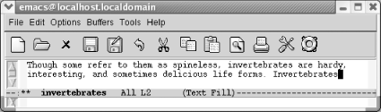
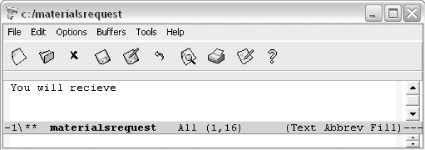
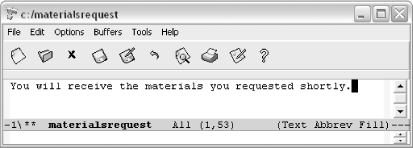

{% include JB/setup %}
{% raw %}
<div>
<div class="book" xml:lang="en"><div class="book"><div class="book"><div class="book"><h1 class="title"><a id="gnu3-CHP-3-SECT-4" class="calibre1"></a>Word Abbreviations</h1></div></div></div><p class="copyright">Word abbreviation mode
<a id="gnu3-CHP-3-ITERM-1954" class="calibre2"></a>
            <a id="gnu3-CHP-3-ITERM-1955" class="calibre2"></a>
            <a id="gnu3-CHP-3-ITERM-1956" class="calibre2"></a>and dynamic
abbreviations are two features that lazy typists will love. The
authors proudly include themselves in that category, so
you'll be in good company if you choose to explore
these features. Dynamic abbreviations are less complex, so
we'll discuss them first.</p><div class="book" xml:lang="en"><div class="book"><div class="book"><div class="book"><h2 class="title1"><a id="gnu3-CHP-3-SECT-4.1" class="calibre1"></a>Dynamic Abbreviations</h2></div></div></div><p class="copyright">Let's say that you are
<a id="gnu3-CHP-3-ITERM-1957" class="calibre2"></a>
               <a id="gnu3-CHP-3-ITERM-1958" class="calibre2"></a>a scientist writing a
paper on invertebrates. You're likely to have many
long technical words in your paper, and if you're
like us, you get tired of typing long words.</p><p class="copyright">Dynamic abbreviations come to the rescue. After
you've typed a long word once, you can simply type a
few letters and give the command <span><strong class="calibre5">M-/</strong></span>
(for <span><strong class="calibre5">dabbrev-expand</strong></span>). Emacs inserts
the nearest word that starts with that string.</p><div class="book"><a id="ch03-28-fm2xml" class="calibre2"></a><table class="calibre8"><colgroup class="calibre9"><col class="calibre10"/></colgroup><tbody class="calibre15"><tr class="calibre12"><td class="calibre17">
                           <p class="copyright">Type: <span><strong class="calibre5">In M-/</strong></span>
                           </p>
                        </td></tr><tr class="calibre12"><td class="calibre17">
                           <p class="copyright">
                              </p><div class="book"><div class="mediaobject"><a id="I_3_tt106" class="calibre2"></a></div></div><p class="copyright">
                           </p>
                        </td></tr><tr class="calibre12"><td class="calibre19">
                           <p class="copyright">Emacs inserts the last word starting with <span><em class="calibre7">in</em></span>, in
this case, <span><em class="calibre7">interesting</em></span>.</p>
                        </td></tr></tbody></table></div><p class="copyright">
               <span><em class="calibre7">Interesting</em></span> was not the word we were hoping for;
it's <span><em class="calibre7">invertebrates</em></span> we wanted.
Without moving the cursor, type <span><strong class="calibre5">M-/</strong></span>
again.</p><div class="book"><a id="ch03-29-fm2xml" class="calibre2"></a><table class="calibre8"><colgroup class="calibre9"><col class="calibre10"/></colgroup><tbody class="calibre15"><tr class="calibre12"><td class="calibre17">
                           <p class="copyright">Type: <span><strong class="calibre5">M-/</strong></span>
                           </p>
                        </td></tr><tr class="calibre12"><td class="calibre17">
                           <p class="copyright">
                              </p><div class="book"><div class="mediaobject"><a id="I_3_tt107" class="calibre2"></a></div></div><p class="copyright">
                           </p>
                        </td></tr><tr class="calibre12"><td class="calibre19">
                           <p class="copyright">Emacs inserts the word <span><em class="calibre7">Invertebrates</em></span>, which is
what we wanted.</p>
                        </td></tr></tbody></table></div><p class="copyright">The word being expanded need not be earlier in the file to be
considered nearest. Emacs looks behind and ahead of the cursor
position to find words it can expand. If there are eligible words
that are equidistant above and below the cursor position both, Emacs
selects the word that is above as the expansion.</p><p class="copyright">Earlier we talked about completing a word with Ispell. Dynamic
abbreviations are a bit different. When you complete a word, the word
probably isn't in the buffer (yet). When you use a
dynamic abbreviation, you simply don't want to type
a word you typed earlier and you're asking Emacs to
do it for you.</p><p class="copyright">Using dynamic abbreviations doesn't require entering
a special minor mode, as standard word abbreviations do. They are
simply an aid for the tired typist. Word abbreviation mode has some
other advantages, though, such as the ability to create an
abbreviation for a phrase or a habitual typo, as we will see next.</p></div><div class="book" xml:lang="en"><div class="book"><div class="book"><div class="book"><h2 class="title1"><a id="gnu3-CHP-3-SECT-4.2" class="calibre1"></a>Word Abbreviation Mode</h2></div></div></div><p class="copyright">Word abbreviation mode lets you
<a id="gnu3-CHP-3-ITERM-1959" class="calibre2"></a>define abbreviations for special words
and phrases. You can
u<a id="gnu3-CHP-3-ITERM-1960" class="calibre2"></a>
               <a id="gnu3-CHP-3-ITERM-1961" class="calibre2"></a>se it in
many ways. Traditionally, abbreviation mode is used so that you
don't have to type long words or phrases in their
entirety. For example, let's say you are writing a
contract that repeatedly references the National Institute of
Standards and Technology, and you are not allowed to use an acronym.
Rather than typing the full name, you can define the abbreviation
<span><em class="calibre7">nist</em></span>. Once you have set up this definition,
Emacs inserts the full name whenever you type the abbreviation
<span><em class="calibre7">nist</em></span>, followed by a space, tab, or punctuation
mark. Emacs watches for you to type an abbreviation, then expands it
automatically for you.</p><p class="copyright">Before showing you how to get into word abbreviation mode and define
your abbreviation list, we'll start with an example.
Our favorite nontraditional use for word abbreviation mode is to
correct misspellings as you type.<sup class="calibre6">[<a id="gnu3-CHP-3-FNOTE-2" href="#ftn.gnu3-CHP-3-FNOTE-2" class="calibre2">2</a>]</sup> Almost everyone has a dozen or so
words that they habitually type incorrectly because of worn neural
pathways. You can simply tell Emacs that these misspellings are
"abbreviations" for the correct
versions, and Emacs fixes the misspellings every time you type them;
you may not even notice that you typed the word wrong before Emacs
fixes it. So assume that you've entered word
abbreviation mode, and that you've defined
<span><em class="calibre7">receive</em></span> as an abbreviation for
<span><em class="calibre7">recieve</em></span>; now, as you're typing,
you make an innocent mistake.</p><div class="book"><a id="ch03-30-fm2xml" class="calibre2"></a><table class="calibre8"><colgroup class="calibre9"><col class="calibre10"/></colgroup><tbody class="calibre15"><tr class="calibre12"><td class="calibre17">
                           <p class="copyright">Type: <span><strong class="calibre5">You will recieve</strong></span>
                           </p>
                        </td></tr><tr class="calibre12"><td class="calibre17">
                           <p class="copyright">
                              </p><div class="book"><div class="mediaobject"><a id="I_3_tt108" class="calibre2"></a></div></div><p class="copyright">
                           </p>
                        </td></tr><tr class="calibre12"><td class="calibre19">
                           <p class="copyright">You type the offending word but haven't yet pressed
<span><strong class="calibre5">Space</strong></span>, which will cue Emacs to
correct it (Windows).</p>
                        </td></tr></tbody></table></div><div class="book"><a id="ch03-31-fm2xml" class="calibre2"></a><table class="calibre8"><colgroup class="calibre9"><col class="calibre10"/></colgroup><tbody class="calibre15"><tr class="calibre12"><td class="calibre17">
                           <p class="copyright">Type:  <span><strong class="calibre5">Space the materials you requested
shortly</strong></span>
                           </p>
                        </td></tr><tr class="calibre12"><td class="calibre17">
                           <p class="copyright">
                              </p><div class="book"><div class="mediaobject"><a id="I_3_tt109" class="calibre2"></a></div></div><p class="copyright">
                           </p>
                        </td></tr><tr class="calibre12"><td class="calibre19">
                           <p class="copyright">Emacs corrects the word automatically after you press  <span><strong class="calibre5">Space</strong></span>; you need not stop typing or even be
aware that a mistake has been made and corrected (Windows).</p>
                        </td></tr></tbody></table></div><p class="copyright">Besides the convenience of being able to invent abbreviations for
phrases that you frequently type, you can see that setting up a short
list of abbreviations for common misspellings could reduce the time
it takes to proofread files and reduce the number of common typing
errors.</p><p class="copyright">When you define abbreviations, never use abbreviations that are words
in their own right or Emacs may expand the word when you
don't want it to, because expansion takes place
without asking. For example, if you frequently write about the World
Association for Replicant Technology, don't define
an abbreviation of <span><em class="calibre7">wart</em></span>, or you
won't be able to write about the difficulties of
handling toads. (If you use the word <span><em class="calibre7">wart</em></span> so
infrequently that you think the convenience of the acronym warrants
it, you can use <span><strong class="calibre5">C-_</strong></span>  to undo the
abbreviation when you really want to type <span><em class="calibre7">wart</em></span>.)</p><p class="copyright">Emacs knows the abbreviations exactly as you define them. If you
define <span><em class="calibre7">recieve</em></span> as an abbreviation for
<span><em class="calibre7">receive</em></span>, you must also define
<span><em class="calibre7">recieves</em></span>, <span><em class="calibre7">recieving</em></span>, and
<span><em class="calibre7">recieved</em></span> as abbreviations to cover all the forms
of the word you might misspell.</p><p class="copyright">Before you go ahead and define some abbreviations,
here's one more basic fact you should know. Emacs
classifies abbreviations according to which modes they work in.
Global abbreviations work in all modes; local abbreviations work only
in the mode in which they were defined. For example,
<a id="gnu3-CHP-3-ITERM-1962" class="calibre2"></a>
               <a id="gnu3-CHP-3-ITERM-1963" class="calibre2"></a>if
you want abbreviations to work only in text mode and not in C mode,
define them as <span><em class="calibre7">local</em></span> while you are in text mode.
If you want abbreviations to work in any mode,
<a id="gnu3-CHP-3-ITERM-1964" class="calibre2"></a>
               <a id="gnu3-CHP-3-ITERM-1965" class="calibre2"></a>define
them as <span><em class="calibre7">global</em></span>. Remember: abbreviations are
local to modes, not to files or buffers.</p><p class="copyright">Emacs also provides an inverse method for defining abbreviations.
This method is called <span><em class="calibre7">inverse</em></span> because you type
the abbreviation and then the definition. Some commands (which we
won't discuss) let you type the definition and then
the abbreviation, but they require some tricky key sequences to let
Emacs know how many words preceding the cursor are part of the
abbreviation. The inverse method is easier and it works whether the
definition for the abbreviation is one word or ten words.</p><div class="book" xml:lang="en"><div class="book"><div class="book"><div class="book"><h3 class="title4"><a id="gnu3-CHP-3-SECT-4.2.1" class="calibre1"></a>Trying word abbreviations for one session</h3></div></div></div><p class="copyright">Usually, if you go to the trouble of defining a word abbreviation,
you will use it in more than one Emacs session. But if
you'd like to try out abbreviation mode to see if
you want to incorporate it into your startup, use the following
procedure.</p><p class="copyright">To define word abbreviations for
<a id="gnu3-CHP-3-ITERM-1966" class="calibre2"></a>
                  <a id="gnu3-CHP-3-ITERM-1967" class="calibre2"></a>this
buffer and session:</p><div class="book"><ol class="orderedlist"><li class="listitem"><p class="copyright">Enter word abbreviation mode by typing <span><strong class="calibre5">M-x
abbrev-mode Enter</strong></span>. <code class="calibre21">Abbrev</code> appears on
the mode line. For a global abbreviation, type the abbreviation you
want to use and type <span><strong class="calibre5">C-x a i g</strong></span> or
<span><strong class="calibre5">C-x a -</strong></span> (for <span><strong class="calibre5">add-inverse-global</strong></span>). (For a local
abbreviation, type <span><strong class="calibre5">C-x a i l</strong></span> for
<span><strong class="calibre5">add-inverse-local</strong></span> instead.) Emacs
then asks you for the expansion.</p></li><li class="listitem"><p class="copyright">Type the definition for the abbreviation and press <span><strong class="calibre5">Enter</strong></span>. Emacs then expands the abbreviation and
will do so each time you type it followed by a space or punctuation
mark.</p></li><li class="listitem"><p class="copyright">When you exit Emacs. it asks if you want to save the abbreviations in
<span><em class="calibre7">.abbrev_defs</em></span>. Type <span><strong class="calibre5">y</strong></span> if you want to save them.</p></li><li class="listitem"><p class="copyright">The abbreviations you've defined will work only in
buffers where you enter abbrev mode.</p></li></ol></div><p class="copyright">If you find that you like using word abbreviation mode, you may want
to make it part of your startup, as described in the following
section.</p></div><div class="book" xml:lang="en"><div class="book"><div class="book"><div class="book"><h3 class="title4"><a id="gnu3-CHP-3-SECT-4.2.2" class="calibre1"></a>Making word abbreviations part of your startup</h3></div></div></div><p class="copyright">Once you become hooked on using abbreviation mode,
it's easiest to incorporate it into your
<span><em class="calibre7">.emacs</em></span> file. This <a id="gnu3-CHP-3-ITERM-1968" class="calibre2"></a>procedure
creates a permanent file of your word abbreviations that is loaded
every time you start Emacs. You can also delete abbreviations from
this file; we'll discuss how to do so in the next
section.</p><p class="copyright">To define word abbreviations and make them part of your startup:</p><div class="book"><ol class="orderedlist"><li class="listitem"><p class="copyright">Add these lines to your <span><em class="calibre7">.emacs</em></span> file:</p><a id="I_3_tt110" class="calibre2"></a><pre class="programlisting">(setq-default abbrev-mode t)
(read-abbrev-file "~/.abbrev_defs")
(setq save-abbrevs t)</pre></li><li class="listitem"><p class="copyright">Save the <span><em class="calibre7">.emacs</em></span> file and reenter Emacs.
<code class="calibre21">Abbrev</code> appears on the mode line. You may get an
error message saying Emacs can't load your abbrev
file (understandable if you haven't created the file
yet). Ignore this error message; it won't happen
again.</p></li><li class="listitem"><p class="copyright">Type an abbreviation and type <span><strong class="calibre5">C-x a i g</strong></span>
or <span><strong class="calibre5">C-x a -</strong></span> following the
abbreviation. These commands create a global abbreviation; if you
want to create a local abbreviation instead, type <span><strong class="calibre5">C-x a i l</strong></span>. Emacs asks you for the expansion.</p></li><li class="listitem"><p class="copyright">Type the definition for the abbreviation and press <span><strong class="calibre5">Enter</strong></span>. Emacs expands the abbreviation and will
do so each time you type it followed by a space or punctuation mark.
You can define as many abbreviations as you want to by repeating
Steps 3 and 4.</p></li><li class="listitem"><p class="copyright">Type <span><strong class="calibre5">C-x C-c</strong></span> to exit Emacs. Emacs
asks if you want to save the abbreviations in
<span><em class="calibre7">.abbrev_defs</em></span>.</p></li><li class="listitem"><p class="copyright">Type <span><strong class="calibre5">y</strong></span> to save your abbreviations.</p></li></ol></div><p class="copyright">After you define some abbreviations and save them, Emacs loads the
abbreviations file automatically. When you define word abbreviations
in subsequent sessions, Emacs asks again whether you want to save the
abbreviations file. Respond with a <span><strong class="calibre5">y</strong></span>
to save the new abbreviations you've defined and
have them take effect automatically.</p></div><div class="book" xml:lang="en"><div class="book"><div class="book"><div class="book"><h3 class="title4"><a id="gnu3-CHP-3-SECT-4.2.3" class="calibre1"></a>Deleting a word abbreviation</h3></div></div></div><p class="copyright">If you use word
<a id="gnu3-CHP-3-ITERM-1969" class="calibre2"></a>
                  <a id="gnu3-CHP-3-ITERM-1970" class="calibre2"></a>abbreviations
frequently, you may define an abbreviation and later change your
mind. You can edit the word abbreviation list by typing <span><strong class="calibre5">M-x edit-abbrevs Enter</strong></span>. You can see (but not
edit) the list by typing <span><strong class="calibre5">M-x list-abbrevs
Enter</strong></span>.</p><p class="copyright">After the list is displayed, use <span><strong class="calibre5">C-k</strong></span>
(or any other editing commands) to delete the abbreviations you
don't want to use. Because Emacs itself formats this
list, don't try to edit lines or add new lines;
deleting is about the only operation that's safe.
Here's how the abbreviations look when you edit word
abbreviations. The file is divided into different sections based on
whether the abbreviations are global or local to a particular mode:</p><a id="I_3_tt111" class="calibre2"></a><pre class="programlisting">(text-mode-abbrev-table)

(lisp-mode-abbrev-table)

(fundamental-mode-abbrev-table)

(global-abbrev-table)

"iwthout" 1        "without"
"prhase"  1        "phrase"
"teh"     1        "the"
"fo"      1        "of"
"eamcs"   2        "Emacs"
"wrok"    1        "work"
"aslo"    1        "also"
"sotred"  1        "stored"
"inforamtion" 1    "information"
"esc"     6        "Esc"
"taht"    1        "that"
"chatper" 1        "chapter"
"adn"     1        "and"
"iwth"    1        "with"
"chpater" 1        "chapter"
"loaction" 1       "location"
"recieve" 1        "receive"
"wart"    1        "World Association for Replicant Technology"</pre><p class="copyright">The file is divided into sections by mode. We defined global
abbreviations in this case; any abbreviations Flyspell (described
earlier in this chapter) creates are local abbreviations and would be
listed under the mode in which they were defined.</p><p class="copyright">In this buffer, the first column lists the abbreviations (in this
case, mostly misspellings). The second column is for internal record
keeping; you don't need to concern yourself with it.
The third column provides the definitions of the abbreviations, the
word or phrase that Emacs substitutes whenever it sees the
abbreviation.</p><p class="copyright">To delete any abbreviation, delete the line for that abbreviation and
save the file by typing <span><strong class="calibre5">M-x
write-abbrev-file</strong></span>. You can move back to the buffer you
were editing before by typing <span><strong class="calibre5">C-x b</strong></span>
(a command for working with multiple buffers, discussed in <a class="calibre2" href="ch04.html" title="Chapter 4. Using Buffers, Windows, and Frames">Chapter 4</a>).</p></div><div class="book" xml:lang="en"><div class="book"><div class="book"><div class="book"><h3 class="title4"><a id="gnu3-CHP-3-SECT-4.2.4" class="calibre1"></a>Disabling word abbreviations</h3></div></div></div><p class="copyright">You can get rid of word
<a id="gnu3-CHP-3-ITERM-1971" class="calibre2"></a>
                  <a id="gnu3-CHP-3-ITERM-1972" class="calibre2"></a>
                  <a id="gnu3-CHP-3-ITERM-1973" class="calibre2"></a>abbreviations completely
in one of two ways. First, you can type <span><strong class="calibre5">M-x
kill-all-abbrevs Enter</strong></span>. This command disables word
abbreviations for the current session.</p><p class="copyright">Second, you can delete the file the abbreviations are in. If you made
word abbreviations part of your startup, delete the <span><strong class="calibre5">read-abbrev-file</strong></span> line from your
<span><em class="calibre7">.emacs</em></span> file.</p></div><div class="book" xml:lang="en"><div class="book"><div class="book"><div class="book"><h3 class="title4"><a id="gnu3-CHP-3-SECT-4.2.5" class="calibre1"></a>Abbreviations and capitalization</h3></div></div></div><p class="copyright">Usually, Emacs capitalizes
<a id="gnu3-CHP-3-ITERM-1974" class="calibre2"></a>
                  <a id="gnu3-CHP-3-ITERM-1975" class="calibre2"></a>
                  <a id="gnu3-CHP-3-ITERM-1976" class="calibre2"></a>abbreviations exactly the way you
want. If you run into special situations with abbreviations and
capitalization, however, you may wantl to know
what's going on behind the scenes. Here are the
rules:</p><div class="book"><ul class="itemizedlist"><li class="listitem"><p class="copyright">If the abbreviation's definition contains any
uppercase letters, Emacs always inserts the definition without
changing anything. For example, if you define
<span><em class="calibre7">ora</em></span> as an abbreviation for
<span><em class="calibre7">O'Reilly Media</em></span>,
<span><em class="calibre7">O'Reilly</em></span> will always be
capitalized exactly as shown.</p></li><li class="listitem"><p class="copyright">If the abbreviation's definition is all lowercase,
Emacs capitalizes according to the following rules:</p><div class="book"><ul class="itemizedlist1"><li class="listitem"><p class="copyright">If you type all of the letters of the abbreviation in lowercase,
Emacs inserts the definition in lowercase.</p></li><li class="listitem"><p class="copyright">If you type any of the letters of the abbreviation in uppercase,
Emacs capitalizes the first letter of the first word.</p></li><li class="listitem"><p class="copyright">If you type all of the letters of the abbreviation in uppercase,
Emacs capitalizes the first letter of every word, unless the variable
<span><strong class="calibre5">abbrev-all-caps</strong></span> is set to <span><strong class="calibre5">t</strong></span>; in this case, it capitalizes all letters.</p></li></ul></div></li></ul></div><p class="copyright">
                  <a class="calibre2" href="ch03s04.html#gnu3-CHP-3-TABLE-7" title="Table 3-7. Word abbreviation capitalization">Table 3-7</a> shows some examples.</p><div class="book"><a id="gnu3-CHP-3-TABLE-7" class="calibre2"></a><p class="title2"><b class="calibre25">Table 3-7. Word abbreviation capitalization</b></p><div class="table-contents"><table summary="Word abbreviation capitalization" class="calibre8"><colgroup class="calibre9"><col class="calibre10"/><col class="calibre10"/><col class="calibre10"/><col class="calibre10"/><col class="calibre10"/></colgroup><thead class="calibre11"><tr class="calibre12"><th class="calibre26">
                              <p class="copyright">
                                 <span><strong class="calibre5">Abbreviation</strong></span>
                              </p>
                           </th><th class="calibre26">
                              <p class="copyright">
                                 <span><strong class="calibre5">Definition</strong></span>
                              </p>
                           </th><th class="calibre26">
                              <p class="copyright">
                                 <span><strong class="calibre5">You type</strong></span>:</p>
                           </th><th class="calibre26">
                              <p class="copyright">
                                 <span><strong class="calibre5">Expands to</strong></span>:</p>
                           </th><th class="calibre27">
                              <p class="copyright">
                                 <span><strong class="calibre5">Because</strong></span>:</p>
                           </th></tr></thead><tbody class="calibre15"><tr class="calibre12"><td class="calibre28">
</td><td class="calibre28">
</td><td class="calibre28">
</td><td class="calibre28">
</td><td class="calibre29">
</td></tr><tr class="calibre12"><td class="calibre28">
                              <p class="copyright">lc</p>
                           </td><td class="calibre28">
                              <p class="copyright">lamb chop</p>
                           </td><td class="calibre28">
                              <p class="copyright">
                                 <span><strong class="calibre5">lc</strong></span>
                              </p>
                           </td><td class="calibre28">
                              <p class="copyright">lamb chop</p>
                           </td><td class="calibre29">
                              <p class="copyright">
                                 <span><em class="calibre7">lc</em></span> is lowercase, so <span><em class="calibre7">lamb
chop</em></span> is lowercase.</p>
                           </td></tr><tr class="calibre12"><td class="calibre28">
                              <p class="copyright">lc</p>
                           </td><td class="calibre28">
                              <p class="copyright">lamb chop</p>
                           </td><td class="calibre28">
                              <p class="copyright">
                                 <span><strong class="calibre5">Lc</strong></span>
                              </p>
                           </td><td class="calibre28">
                              <p class="copyright">Lamb chop</p>
                           </td><td class="calibre29">
                              <p class="copyright">There's one capital in <span><em class="calibre7">Lc</em></span>, so
<span><em class="calibre7">Lamb</em></span> is capitalized.</p>
                           </td></tr><tr class="calibre12"><td class="calibre28">
                              <p class="copyright">lc</p>
                           </td><td class="calibre28">
                              <p class="copyright">lamb chop</p>
                           </td><td class="calibre28">
                              <p class="copyright">
                                 <span><strong class="calibre5">lC</strong></span>
                              </p>
                           </td><td class="calibre28">
                              <p class="copyright">Lamb chop</p>
                           </td><td class="calibre29">
                              <p class="copyright">There's one capital in <span><em class="calibre7">lC</em></span>, so
<span><em class="calibre7">Lamb</em></span> is capitalized.</p>
                           </td></tr><tr class="calibre12"><td class="calibre28">
                              <p class="copyright">lc</p>
                           </td><td class="calibre28">
                              <p class="copyright">lamb chop</p>
                           </td><td class="calibre28">
                              <p class="copyright">
                                 <span><strong class="calibre5">LC</strong></span>
                              </p>
                           </td><td class="calibre28">
                              <p class="copyright">Lamb Chop</p>
                           </td><td class="calibre29">
                              <p class="copyright">
                                 <span><em class="calibre7">LC</em></span> is all capitals, so both words are
capitalized.</p>
                           </td></tr><tr class="calibre12"><td class="calibre28">
                              <p class="copyright">lc</p>
                           </td><td class="calibre28">
                              <p class="copyright">Lamb Chop</p>
                           </td><td class="calibre28">
                              <p class="copyright">
                                 <span><strong class="calibre5">lc</strong></span>
                              </p>
                           </td><td class="calibre28">
                              <p class="copyright">Lamb Chop</p>
                           </td><td class="calibre29">
                              <p class="copyright">Capitals in the definition are always unchanged.</p>
                           </td></tr><tr class="calibre12"><td class="calibre30">
                              <p class="copyright">lc</p>
                           </td><td class="calibre30">
                              <p class="copyright">Lamb Chop</p>
                           </td><td class="calibre30">
                              <p class="copyright">
                                 <span><strong class="calibre5">LC</strong></span>
                              </p>
                           </td><td class="calibre30">
                              <p class="copyright">Lamb Chop</p>
                           </td><td class="calibre31">
                              <p class="copyright">Capitals in the definition are always unchanged.</p>
                           </td></tr></tbody></table></div></div><br class="book"/><p class="copyright">You don't need to remember the rules, but looking
them over may help you out if you can't understand
how Emacs is capitalizing. In our experience, defining abbreviations
in lowercase circumvents most capitalization problems.</p><p class="copyright">
                  <a class="calibre2" href="ch03s04.html#gnu3-CHP-3-TABLE-8" title="Table 3-8. Word abbreviation commands">Table 3-8</a> summarizes word abbreviation commands.</p><div class="book"><a id="gnu3-CHP-3-TABLE-8" class="calibre2"></a><p class="title2"><b class="calibre25">Table 3-8. Word abbreviation commands</b></p><div class="table-contents"><table summary="Word abbreviation commands" class="calibre8"><colgroup class="calibre9"><col class="calibre10"/><col class="calibre10"/><col class="calibre10"/></colgroup><thead class="calibre11"><tr class="calibre12"><th class="calibre26">
                              <p class="copyright">
                                 <span><strong class="calibre5">Keystrokes</strong></span>
                              </p>
                           </th><th class="calibre26">
                              <p class="copyright">
                                 <span><strong class="calibre5">Command name</strong></span>
                              </p>
                           </th><th class="calibre27">
                              <p class="copyright">
                                 <span><strong class="calibre5">Action</strong></span>
                              </p>
                           </th></tr></thead><tbody class="calibre15"><tr class="calibre12"><td class="calibre28">
                              <p class="copyright">
                                 <span><strong class="calibre5">M-/</strong></span>
                              </p>
                           </td><td class="calibre28">
                              <p class="copyright">
                                 <span><strong class="calibre5">dabbrev-expand</strong></span>
                              </p>
                           </td><td class="calibre29">
                              <p class="copyright">Complete this word based on the nearest word that starts with this
string (press <span><strong class="calibre5">M-/</strong></span> again if
that's not the word you want).</p>
                           </td></tr><tr class="calibre12"><td class="calibre28">
                              <p class="copyright">(<span><em class="calibre7">none</em></span>)</p>
                           </td><td class="calibre28">
                              <p class="copyright">
                                 <span><strong class="calibre5">abbrev-mode</strong></span>
                              </p>
                           </td><td class="calibre29">
                              <p class="copyright">Enter (or exit) word abbreviation mode.</p>
                           </td></tr><tr class="calibre12"><td class="calibre28">
                              <p class="copyright">
                                 <span><strong class="calibre5">C-x a -</strong></span> 
                                 <span><em class="calibre7">or</em></span>
                                 <span><strong class="calibre5">C-x a i g</strong></span>
                              </p>
                           </td><td class="calibre28">
                              <p class="copyright">
                                 <span><strong class="calibre5">inverse-add-global-abbrev</strong></span>
                              </p>
                           </td><td class="calibre29">
                              <p class="copyright">After typing the global abbreviation, type the definition.</p>
                           </td></tr><tr class="calibre12"><td class="calibre28">
                              <p class="copyright">
                                 <span><strong class="calibre5">C-x a i l</strong></span>
                              </p>
                           </td><td class="calibre28">
                              <p class="copyright">
                                 <span><strong class="calibre5">inverse-add-mode-abbrev</strong></span>
                              </p>
                           </td><td class="calibre29">
                              <p class="copyright">After typing the local abbreviation, type the definition.</p>
                           </td></tr><tr class="calibre12"><td class="calibre28">
                              <p class="copyright">(<span><em class="calibre7">none</em></span>)</p>
                           </td><td class="calibre28">
                              <p class="copyright">
                                 <span><strong class="calibre5">unexpand-abbrev</strong></span>
                              </p>
                           </td><td class="calibre29">
                              <p class="copyright">Undo the last word abbreviation.</p>
                           </td></tr><tr class="calibre12"><td class="calibre28">
                              <p class="copyright">(<span><em class="calibre7">none</em></span>)</p>
                           </td><td class="calibre28">
                              <p class="copyright">
                                 <span><strong class="calibre5">write-abbrev-file</strong></span>
                              </p>
                           </td><td class="calibre29">
                              <p class="copyright">Write the word abbreviation file.</p>
                           </td></tr><tr class="calibre12"><td class="calibre28">
                              <p class="copyright">(<span><em class="calibre7">none</em></span>)</p>
                           </td><td class="calibre28">
                              <p class="copyright">
                                 <span><strong class="calibre5">edit-abbrevs</strong></span>
                              </p>
                           </td><td class="calibre29">
                              <p class="copyright">Edit the word abbreviations.</p>
                           </td></tr><tr class="calibre12"><td class="calibre28">
                              <p class="copyright">(<span><em class="calibre7">none</em></span>)</p>
                           </td><td class="calibre28">
                              <p class="copyright">
                                 <span><strong class="calibre5">list-abbrevs</strong></span>
                              </p>
                           </td><td class="calibre29">
                              <p class="copyright">View the word abbreviations.</p>
                           </td></tr><tr class="calibre12"><td class="calibre30">
                              <p class="copyright">(<span><em class="calibre7">none</em></span>)</p>
                           </td><td class="calibre30">
                              <p class="copyright">
                                 <span><strong class="calibre5">kill-all-abbrevs</strong></span>
                              </p>
                           </td><td class="calibre31">
                              <p class="copyright">Kill abbreviations for this session.</p>
                           </td></tr></tbody></table></div></div><br class="book"/></div></div><div class="book" xml:lang="en"><div class="book"><div class="book"><div class="book"><h2 class="title1"><a id="gnu3-CHP-3-SECT-4.3" class="calibre1"></a>Problems You May Encounter</h2></div></div></div><div class="book"><ul class="itemizedlist"><li class="listitem"><p class="copyright">
                     <span><strong class="calibre5">You search for a string you can see on the
screen, and Emacs can't find it</strong></span>. The most
probable explanation <a id="gnu3-CHP-3-ITERM-1977" class="calibre2"></a>
                     <a id="gnu3-CHP-3-ITERM-1978" class="calibre2"></a>is that Emacs is taking into
account line breaks and punctuation, and you're not
including these in the search string. Use word search, which ignores
any line breaks or punctuation, to find the string.</p></li><li class="listitem"><p class="copyright">
                     <span><strong class="calibre5">You get a message that says</strong></span>,
<code class="calibre21">Searching for program: No such file or directory
ispell</code>. You
don't have Ispell installed. Ispell is external to
Emacs; see <a class="calibre2" href="ch13.html" title="Chapter 13. Platform-Specific Considerations">Chapter 13</a> for details on installing
Ispell on Mac OS X and Windows.</p></li><li class="listitem"><p class="copyright">
                     <span><strong class="calibre5">You can't see the pop-up menu
in Flyspell</strong></span>. You activate this pop-up menu by pointing the
mouse at a given word and pressing the middle mouse button.
Essentially, you need a three-button mouse to run Flyspell.</p></li></ul></div></div><div class="book"><br class="book"/><hr class="calibre4"/><div class="book"><p class="copyright"><sup class="calibre6">[<a id="ftn.gnu3-CHP-3-FNOTE-2" href="#gnu3-CHP-3-FNOTE-2" class="calibre2">2</a>] </sup>Once upon a time
this use of word abbreviation mode was nontraditional; these days
Flyspell, described earlier, automatically defines misspellings as
abbreviations.</p></div></div></div></div>

{% endraw %}

